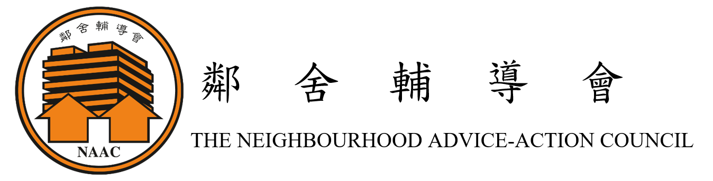
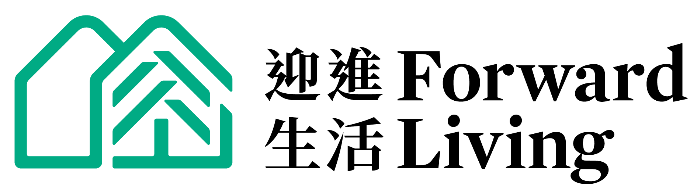

面對海嘯式高齡化：我們看見的社區需要
香港正面臨前所未有的人口結構轉變。根據政府統計處最新推算，至 2046 年高齡人口比例將大幅飆升至 36.0%[1]，意味著每 3 名香港人中就有 1 人是長者。
正如航空樞紐匯集各家航司航線一樣，RHub 串聯亞太區內的各個服務機構。
嶺南大學自2025年中起，在星展基金會的支持下，與新加坡社科大學攜手合作，聯同亞太區多所大學及機構推動「記憶與認知健康社區計劃」。計劃透過與本地社區機構合作，開展一系列回憶引導活動，幫助社區長者重拾人生故事，促進社交與認知健康。
計劃三大部分
招募熱心長者及照顧者接受專業認證培訓，通過系統化理論與實務考核，成為社區記憶守護的核心力量。
運用虛擬實境（VR）技術突破時空限制，提供每位長者完整 12 節沉浸式體驗，由完訓的引導員全程陪伴與帶領。
科學化評估活動對引導員與參與長者在「生活品質、情緒及認知健康狀況」的長遠正面轉變。
回憶引難員培訓計劃：如何成為回憶引導員？
本培訓課程專為熱心長者、家庭照顧者以及對銀髮健康有興趣的公眾人士設計。我們引進跨區域聯合開發的國際級培育模型，通過以下三個學習階段，即可轉化為社區專業的非藥物治療支持力量。
學員將登入專屬線上學習平台。此階段著重於獨立建構基礎理論知識，彈性安排時間自主修讀，深入學習高齡認知學、懷舊引導的核心精神、生命歷程基礎以及長者基本溝通原則，為實體實戰做好全面理論準備。
由嶺南大學與專業導師親自帶領，依據專業教材系統化解構實務技巧：
探討成功老齡化現況，建構「生命歷程途徑」與以人為本關護理念。
實戰演練引導員溝通與高效訪談技巧，掌握不同回憶者類型的互動策略。
深度解構回憶活動的結構與種類，學習引導員角色定位與資源探索。
掌握文件記錄必備內容與反思，嚴格遵循回憶引導實習標準作業程序(SOP)。
完成線上自學與實體課堂後，學員將被分派至各大合作機構，親身走入社區，在真實環境中完成共 12 節的回憶引導實習工作。
學員將被分派至以下合作單位完成 12 節實務工作


順利通過三個階段學習並完成社區實習的學員，將獲頒由新加坡社科大學（SUSS）簽發的「專業回憶引導員證書」。
第二期預計招募 20 名長者及 20 名照顧者 參與培訓。歡迎各區義工、照顧者報名參與。
📌 報名須知：
科技賦能：VR 沉浸式回憶引導活動
打破傳統照片的平面限制，本計劃開創性引入虛擬實境技術，為長者提供完整 12 節的深度沉浸式懷舊旅程。
每次活動均由嶺南大學工作人員或已受訓之專業 VR 回憶引導員進行全程陪伴與現場安全督導。帶領者不只是技術操作者，更是長者心靈故事的傾聽者與導航員。
本計劃之 VR 內容經嚴謹編排，將虛擬實境（VR）的視覺情境，精準對應至香港經典地方與本土集體回憶。在專業人員的帶領下，長者透過沉浸式場景探索，配合視覺、聽覺等精心設計的多感官刺激，有效活化大腦的長期記憶，達致認知活化之成效。
經典香港主題場景連結示例：

▲ 帶領者全程隨侍在側引導長者，將 VR 畫面轉化為對香港本土地方的深層情感記憶
第一期服務成果展現
自 2025 年 10 月至 2026 年 2 月期間，第一期回憶引導員深耕基層。根據評估數據顯示，長者在 WHO-5 幸福感量表以及減少孤獨感方面，均獲得了顯著的改善。
4,320+
總服務時數
124+
受惠長者
360
已執行服務節數
83.7%
長者高幸福感比例
81.7%
篩查無抑鬱指標比例
31位
完訓回憶引導員
來自社區的真實回響
「我來參加活動時似是 A4 白紙，出去了走一下，就有很多顏色的紙，好多故事、好多回憶、什麼都有，出去走一圈白紙都變彩色了，色彩豐富，美麗過彩虹。」
— 參與第一期回憶引導活動之社區長者
「在這次培訓旅程中，我最大的收穫，是學會用心傾聽與尊重長者的內心世界，也收穫了一段彼此陪伴、相互溫暖的珍貴連結。長者的人生故事，讓我體會到回憶是連繫過去與現在的重要紐帶。」
— 完訓回憶引導員 (RF)
歡迎向我們諮詢或聯絡
無論您是以下哪種身份，我們都非常期待與您建立聯繫：
歡迎各區長者中心、社福單位、醫療或學術機構洽談跨界合作，共同推動認知健康社區網絡。
渴望學習專業非藥物介入技巧，充實退休生活或提升照護品質，並獲取跨區域證書認證。
希望免費報名體驗 12 節沉浸式虛擬實境懷舊旅程，在安全溫馨的環境中重溫往日溫暖記憶。
嶺南大學專案小組諮詢熱線
(+852) 2616 7909